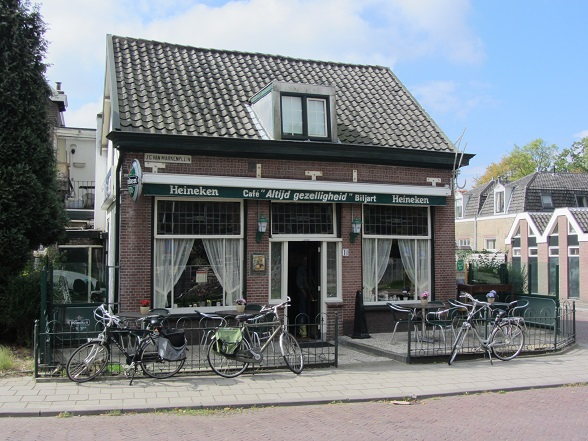
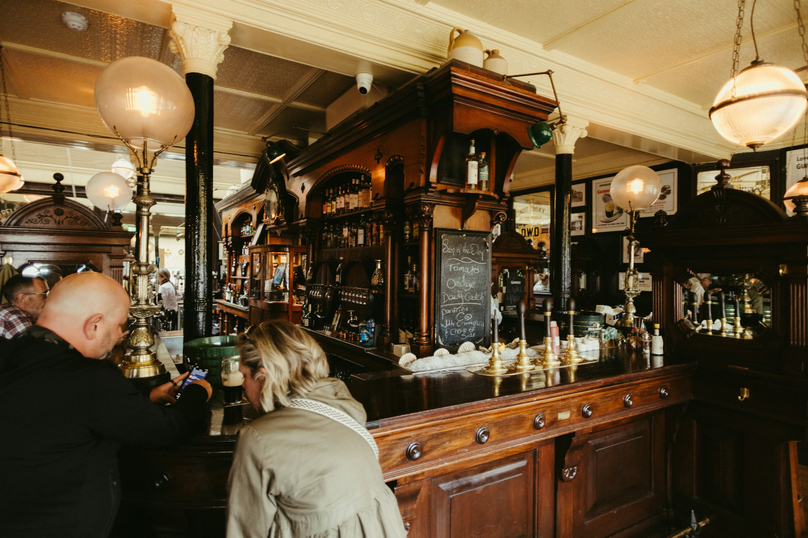

Pubquiz
Elke laatste woensdag van de maand
Een pubquiz is een uit Groot-Brittannië overgewaaid fenomeen: teams van ongeveer 4 à 5 personen nemen het tegen elkaar op over allerhande onderwerpen.

Biljart- en Dartcafé
Proef de sfeer van een echt “oud bruin” café in een van de rustige wijken van Delft.
Maak een praatje, neem een drankje, leg een kaartje of speel een potje biljarten of darten.
Gezelligheid kent bij ons geen tijd!
We hopen u binnenkort bij ons te mogen ontmoeten.

Gezellig een potje biljarten? Ons café beschikt over twee biljarttafels. Deze zijn te gebruiken voor zowel vrije tijd als voor wedstrijden.
Er zijn verschillende teams die bij ons biljarten. Neem daarom altijd eerst even contact met ons op, zodat u verzekerd bent van een plek aan tafel.
Wilt u zelf een biljartvereniging oprichten, of heeft u er al een maar nog geen plek om te spelen? Neem dan contact met ons op.


Naast biljarten kunt u bij ons ook terecht voor een potje darten. Pak uw pijlen, bestel er iets bij en maak er een gezellige avond van.
Wij organiseren het hele jaar door allerlei evenementen. Bekijk onze Facebook-pagina voor de geplande activiteiten.
Elke laatste woensdag van de maand
Een pubquiz is een uit Groot-Brittannië overgewaaid fenomeen: teams van ongeveer 4 à 5 personen nemen het tegen elkaar op over allerhande onderwerpen.

Feest, receptie of verjaardag? Lekker thuis geen rommel? Vier uw feest, receptie, verjaardag, afstuderen of bedrijfsborrel bij Café Altijd Gezelligheid.
Plaats tot en met 80 personen
Neem contact met ons op om een afspraak te maken en uw wensen door te nemen: 015 - 364 14 64.
Tot ziens op uw aanstaande feest!
Maandag: gesloten
Wilt u zeker weten wanneer de deur openstaat? Bel of mail ons gerust.